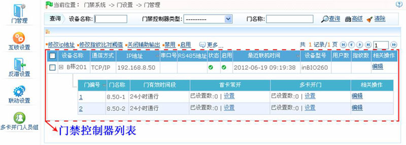
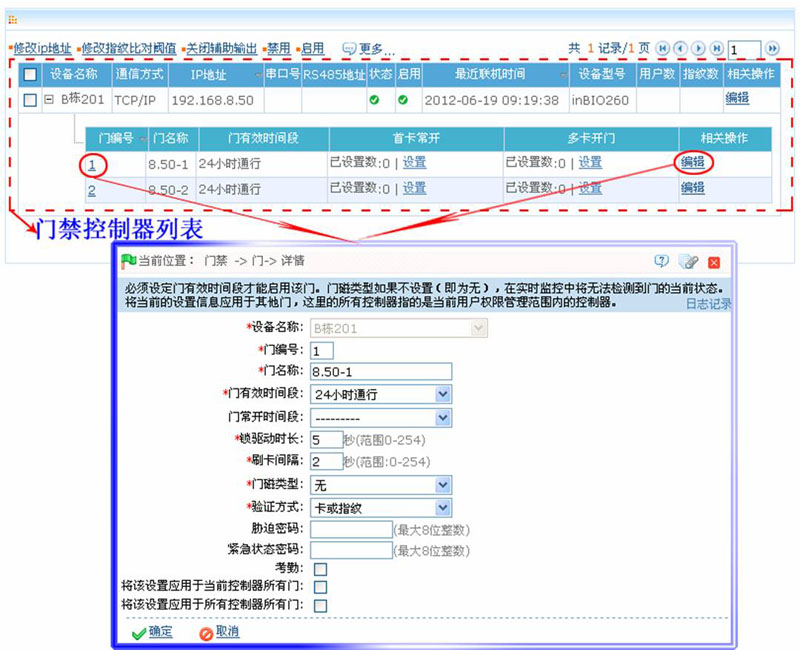

6.3.1 门管理
点击【门禁】 【门设置】，默认进入【门管理】页面，显示所有控制器列表：
【门设置】，默认进入【门管理】页面，显示所有控制器列表：

展开后可以显示该控制器控制的所有门。第一次进入界面或者查询成功后，如果当前系统内存在门禁控制器或者查询结果不为空，则默认展开第一个门禁控制器的门。点击相应按钮进行相关参数设置。
门管理包括：控制器管理、门管理。
1、控制器管理
为实现系统与设备的通信、数据上传、配置信息下载，需要对设备和系统参数进行设置。用户可以看到当前系统中存在的所有权限范围内的门禁控制器，可编辑此处的设备，如果用户需要添加或者删除设备，只能到设备管理中进行相关操作。
控制器管理包括：修改IP地址、修改指纹比对阈值、关闭辅助输出、禁用、启用、升级固件、修改通讯密码、同步时间、获取事件记录和获取人员信息。
（1）、设备基本信息
选择设备，点击“相关操作”下的【编辑】，相关操作请参见5.2.4 设备维护。
（2）、修改IP地址
选择设备，点击【修改IP地址】，显示修改界面，网关和子网掩码会实时从设备中获取，获取失败则说明网络不通，则IP地址也不能修改。输入新的IP地址、网关、子网掩码。点击【确定】保存设置并退出。此功能与5.2.1 新增门禁设备中的修改IP地址功能基本相同。区别在于搜索控制器时的设备尚未添加到系统中，而当前的修改设备IP地址是针对已添加过的设备。
（3）、修改指纹比对阈值
用户可以修改设备中的指纹比对阈值，该值范围为35-70，设备出厂默认值为55。新增设备时系统将从设备中读取设备中的该值，如果读取成功，用户可通过设备列表查看当前指纹比对阈值大小。该操作支持批量操作，可同时修改多台设备的指纹比对阈值。
（4）、关闭辅助输出
关闭设备辅助输出接口所接外部设备。
（5）、禁用/启用
选择设备，点击【禁用/启用】，停止/开始使用该设备。当设备与系统通信中断或设备出现问题，则设备可能会自动显示为禁用状态。此时，可以在调整网络或设备后，点击【启用】则系统重新连接设备，恢复设备的通信状态。
 注意：如果当前设备处于启用状态且尚未连接成功，用户对其进行启用操作，系统将立即对该设备进行重连。
注意：如果当前设备处于启用状态且尚未连接成功，用户对其进行启用操作，系统将立即对该设备进行重连。
（6）、升级固件
升级设备中的固件，勾选您要升级固件的设备，点击【升级固件】，进入编辑界面，点击【浏览】选择由本公司为您提供的固件升级文件（名字为emfw.cfg），点击【确定】开始升级。
 注意：请用户不要自行升级固件，升级固件前要和经销商联系或经销商通知您需要更新的时候再更新，自行升级出现的问题可能影响您的正常使用。
注意：请用户不要自行升级固件，升级固件前要和经销商联系或经销商通知您需要更新的时候再更新，自行升级出现的问题可能影响您的正常使用。
（7）、修改通讯密码
修改通讯密码前需先输入旧密码，验证通过方可修改，两次输入同一新密码，点击【确定】，完成通讯密码修改。
 说明：通讯密码不能包含空格，推荐使用数字与字母的组合。设置通讯密码可以提高当前设备的安全性，建议每台设备都设置通讯密码。
说明：通讯密码不能包含空格，推荐使用数字与字母的组合。设置通讯密码可以提高当前设备的安全性，建议每台设备都设置通讯密码。
（8）、同步时间
将设备的时间同步为和服务器当前时间一致。
（9）、获取事件记录
获取设备中的事件记录到系统中。
该操作提供三个选项：只获取新记录、获取全部记录、通过SD卡获取记录。
获取新记录：系统将只获取上次获取记录之后新产生的事件记录到数据库中，重复的记录不会重复写入。
获取全部记录：系统将重新获取当前控制器中所有的事件记录，重复的记录不会重复写入。
通过SD卡获取记录：系统通过读取SD卡中数据来获取控制器事件记录。
当网络状况良好且系统与设备通讯状态正常时，系统会实时地获取设备中的事件记录并保存到系统内的数据库中。但当网络中断或其他因素导致通讯中断时，设备中的事件记录并没有实时上传至系统中，这时就可以使用该操作，手动获取设备中的事件记录。另外，系统默认会在每天的00:00时自动获取设备中的事件记录。
 说明：门禁控制器中最多能够存储10万条事件记录，当记录超过10万条记录，设备将自动删除最早保存的记录（默认删除1万条）。
说明：门禁控制器中最多能够存储10万条事件记录，当记录超过10万条记录，设备将自动删除最早保存的记录（默认删除1万条）。
（10）、获取人员信息
重新获取设备中当前的人员数量和总的指纹数。获取到的值将会显示在设备列表中。
2、门管理
在设备列表中，会显示所有门禁设备列表，点击设备名称前的“+”按钮，显示某个设备下的门列表。新增设备时自动按照门的数量增加门（对应的设备名称、门编号不可编辑），用户在使用设备（包含门）之前必须逐个编辑门信息（或者使用将当前设置应用到其他门的快捷方式），编辑后设置信息将下发到设备，设置信息生效后方可使用。
修改门信息操作步骤：
（1）、直接单击“门编号“或单击门所在行的“相关操作”下的【编辑】，进入门编辑门页面：

各字段说明如下：
设备名称：为不可编辑项（需要在5.2.1 新增门禁设备中进行编辑修改）。
门编号：系统根据设备的门数量自动编号（如：四门控制器四个门编号分别为1,2,3,4），该编号将和设备上的门编号保持一致。
 注意：虽然默认情况下门名称中下划线后的数字跟门编号一致，但反潜、互锁中的1/2/3/4指的均是门编号而非门名称后的数字，二者没有必然联系，并且系统允许用户修改门名称，所以不能混为一谈。
注意：虽然默认情况下门名称中下划线后的数字跟门编号一致，但反潜、互锁中的1/2/3/4指的均是门编号而非门名称后的数字，二者没有必然联系，并且系统允许用户修改门名称，所以不能混为一谈。
门名称：门名称默认值为“设备名称_门编号”，该字段允许用户根据需要进行修改。最大可填入30个任意字符；
门有效时间段、门常开时间段：默认均为空，初始化后的以及用户新增的门禁时间段将会在此显示，供用户选择。在门编辑时，门有效时间段为必填项，只有设置门有效时间段后，才能正常开关门。门常开时间段必须在门有效时间段内才有效，建议设置门常开时间段设置包含于门有效时间段。
 提示：对该门具有门禁权限的卡连续刷5下，可解除当天的常开状态（含首卡常开），且使门立即关闭。
提示：对该门具有门禁权限的卡连续刷5下，可解除当天的常开状态（含首卡常开），且使门立即关闭。
锁驱动时长：用来控制刷卡后开锁的延时时间，单位是秒，默认为5秒，用户可输入0到254间的数字。
刷卡间隔：单位秒（范围：0-254秒），默认为2秒。
门磁类型：无（不检测门磁）、常开、常闭，默认无，用户编辑门时可以选择门磁类型常开或者常闭，如果选择常开或常闭，则需要选择门磁延时和是否需要闭门回锁，默认情况下，一旦设置门磁类型常开或常闭，则门磁延时默认15s，默认启动闭门回锁。
门磁延时：门被打开后延迟检查门磁的时间。开门之后过一段时间才开始检测门磁，门在非“常开”时段，如果状态是打开的，开始计时，过了门磁延时时间则开始报警，门关闭时报警取消。门磁延时需大于锁驱动时长。默认为15秒，用户可输入1到254间的整数。
闭门回锁：设置闭门之后是否回锁，勾选则回锁。
开门方式：支持仅卡、卡加密码、卡加指纹、卡或指纹，默认为卡或指纹。当选择卡加密码的开门方式时，请确保该门使用带键盘的读头。
胁迫密码、紧急状态密码：在受胁迫时用胁迫密码（与合法卡配合使用）可以开门，胁迫密码开门时会报警；在紧急状态下，用户可以使用紧急状态密码（也称为超级密码）开门，紧急状态密码是正常开门，且在任何时间段、任何验证方式下都有效，一般是管理员使用。
-
胁迫密码开门（与合法卡配合使用）时，当验证方式为“仅卡”模式时，需要先按“ESC”再按设置的密码数字加确认键，最后再刷合法卡，此时门打开且产生报警；当验证方式为“卡加密码”模式时，则为先刷卡，再按密码数字然后按确认键盘（和卡加密码模式下正常开门使用相同），此时门打开且产生报警。
- 紧急状态密码开门时，密码必须为不超过8位的数字（整数），仅输入密码就可以开门，每次输入密码前需先按【ESC】键，再按设置的密码，最后需按确定键才能执行。
使用胁迫密码和紧急状态密码时，输入每个数字的时间间隔不能超过10秒，且两个密码最好不设置相同数字。
考勤：默认状态为不选中。选中后，该设备的所有出入记录都会在考勤报表中显示。
将该设置应用于当前控制器所有门：点选则应用于当前控制器的所有门。
将该设置应用于所有控制器所有门：点选则应用于当前用户权限范围内的所有控制器的所有门。
（2）、修改完成后，单击【确定】按钮，保存修改后的门信息。